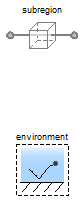

Table of Contents
- User's Guide
- Blocks
- Conditions
- Assemblies
- Regions
- Subregions
- Phases
- Species
- Chemistry
- Connectors
- Characteristics
- Units
- Quantities
- Utilities
- Icons
Download
- Latest: v0.1.2 (2013-12-13)
FCSys.Subregions.Examples.PhaseChange
Examples of phase changeInformation
Extends from Modelica.Icons.ExamplesPackage (Icon for packages containing runnable examples).Package Content
| Name | Description |
|---|---|
| Evaporation of H2O | |
| Test absorption of H2O vapor into the ionomer |
 FCSys.Subregions.Examples.PhaseChange.Evaporation
FCSys.Subregions.Examples.PhaseChange.Evaporation
Evaporation of H2O

Information
Initially, the water vapor is below saturation and a small amount of liquid water is present (1/1000 of the total volume). Some of the liquid evaporates until saturation is reached. The boundaries are adiabatic; therefore, the temperature of the liquid and the gas decreases due to the enthalpy of formation.
See also Characteristics.Examples.SaturationPressure. Extends from Examples.Subregion (Single subregion, with H2 by default).
Parameters
| Type | Name | Default | Description |
|---|---|---|---|
| Species | |||
| Boolean | 'inclC+' | true | Carbon plus (C+) |
| Boolean | 'inclSO3-' | false | Nafion sulfonate (C19HF37O5S-, abbreviated as SO3-) |
| Boolean | 'incle-' | false | Electrons (e-) |
| Boolean | 'inclH+' | false | Protons (H+) |
| Boolean | inclH2 | false | Hydrogen (H2) |
| Boolean | inclH2O | true | Water vapor (H2O) |
| Boolean | inclN2 | false | Nitrogen (N2) |
| Boolean | inclO2 | false | Oxygen (O2) |
Modelica definition
model Evaporation "Evaporation of H2O" output Q.Pressure p_sat=Characteristics.H2O.p_sat(subregion.gas.H2O.T) "Saturation pressure via Modelica.Media"; extends Examples.Subregion( inclH2O=true, inclH2=false, 'inclC+'=true, subregion( volume(inclCapillary=false), liquid(inclH2O=inclH2O, H2O(epsilon_IC=0.001)), gas(H2O(p_IC=U.kPa)))); end Evaporation;
FCSys.Subregions.Examples.PhaseChange.Hydration
Test absorption of H2O vapor into the ionomer
Information
The water vapor is held at saturation pressure at the environmental temperature Water is supplied as necessary to maintain this condition. The ionomer begins with hydration of λ = 8 and comes to equilibrium at approximately λ ≈ 14 in about a half an hour.
See also Characteristics.Examples.HydrationLevel.
Extends from Examples.Subregion (Single subregion, with H2 by default).
Parameters
| Type | Name | Default | Description |
|---|---|---|---|
| Species | |||
| Boolean | 'inclC+' | false | Carbon plus (C+) |
| Boolean | 'inclSO3-' | true | Nafion sulfonate (C19HF37O5S-, abbreviated as SO3-) |
| Boolean | 'incle-' | false | Electrons (e-) |
| Boolean | 'inclH+' | false | Protons (H+) |
| Boolean | inclH2 | false | Hydrogen (H2) |
| Boolean | inclH2O | true | Water vapor (H2O) |
| Boolean | inclN2 | false | Nitrogen (N2) |
| Boolean | inclO2 | false | Oxygen (O2) |
Modelica definition
model Hydration "Test absorption of H2O vapor into the ionomer" extends Examples.Subregion( 'inclSO3-'=true, inclH2O=true, inclH2=false, subregion(gas(H2O(consMaterial=ConsThermo.IC, N(stateSelect=StateSelect.always))), ionomer( inclH2O=true, 'SO3-'(consEnergy=ConsThermo.IC), H2O(lambda_IC=8,initEnergy=Init.none))), environment(T=333.15*U.K, RH=1)); end Hydration;